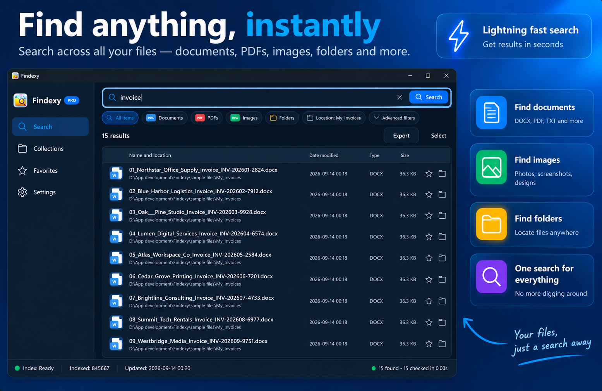
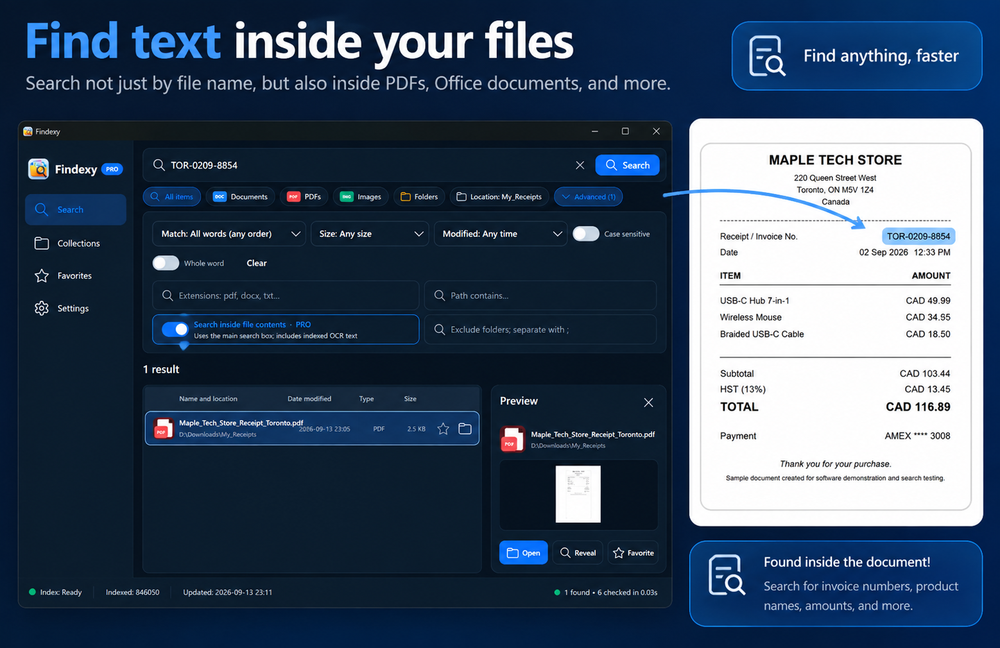
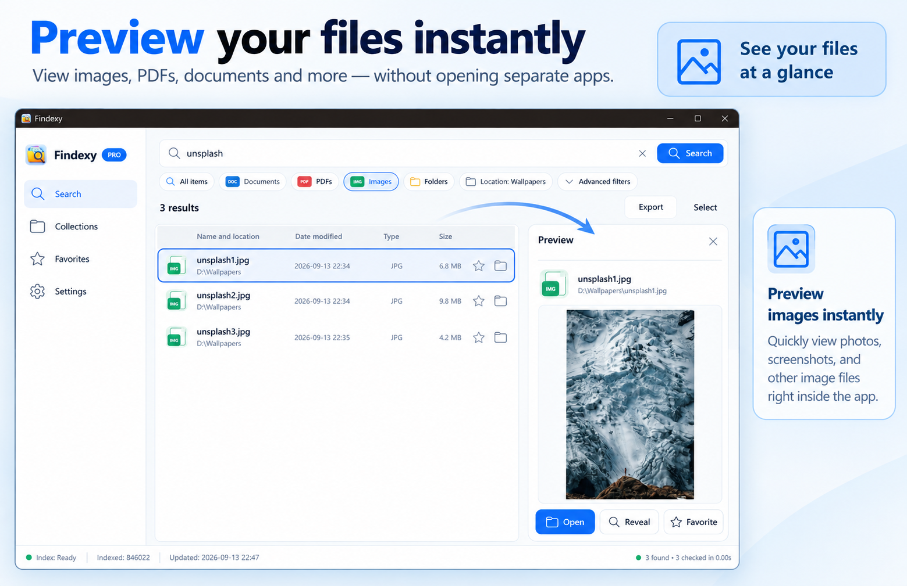
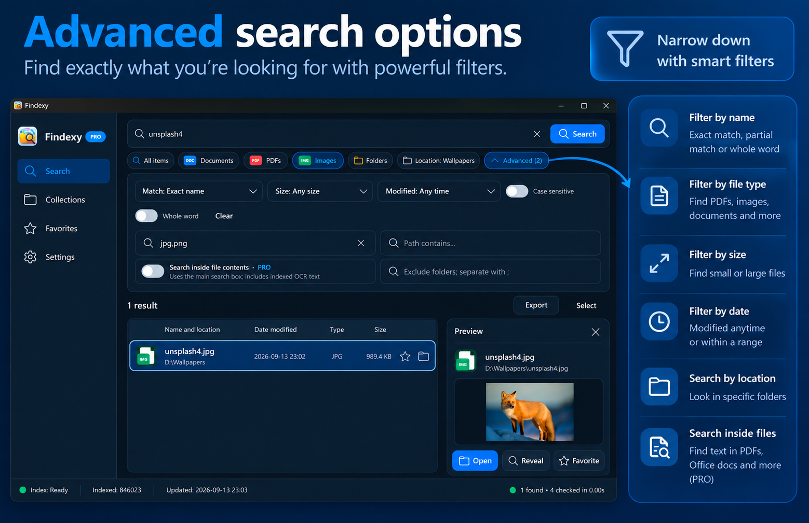
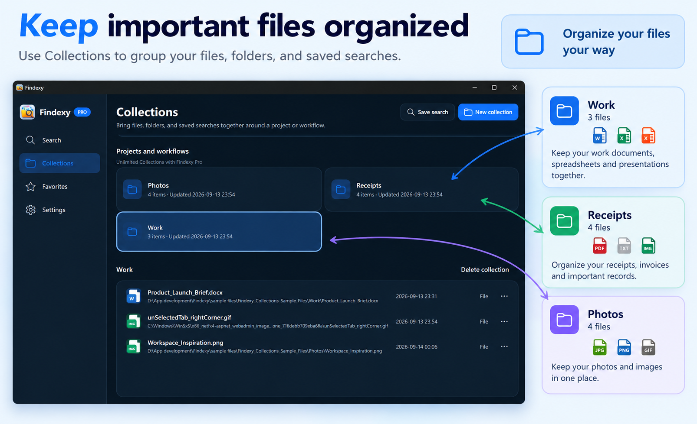

Find files quickly
Search names and paths across the folders you choose, with handy file type filters.
MADE FOR WINDOWS
Fast file search for Windows. Find documents, PDFs, images, videos, and folders in one place. Preview results and keep important files close.
Free to get started. Findexy Pro is a one-time optional upgrade.

ONE PLACE FOR YOUR FILES
Start with a filename. Add the tools you need when the search gets more specific.
Search names and paths across the folders you choose, with handy file type filters.
See basic image and text previews in Free. Pro adds richer document and media previews.
Save favorites and group files in Collections. Free includes two Collections.
Search inside supported files, use advanced filters and local OCR, and export results.
A CLOSER LOOK
Real views of Findexy for Windows.

Find words and phrases inside supported documents and scanned files, not only in filenames.

See images and text right in Findexy. Pro unlocks richer PDF, Office, SVG, and media previews.

Use dates, sizes, extensions, and other advanced filters when a simple search is not enough.

Keep useful files grouped for quick access. Make two Collections in Free or unlimited ones in Pro.
SIMPLE CHOICE
Core file search stays useful and unlimited. Upgrade inside the app when you want deeper search and more room to organize.
Pro is a one-time purchase through Microsoft Store. Your local Store price appears in the app before checkout.
Findexy Free
Findexy Pro ONE-TIME PURCHASE
READY WHEN YOU ARE
Get Findexy for Windows from Microsoft Store.